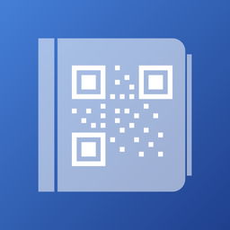
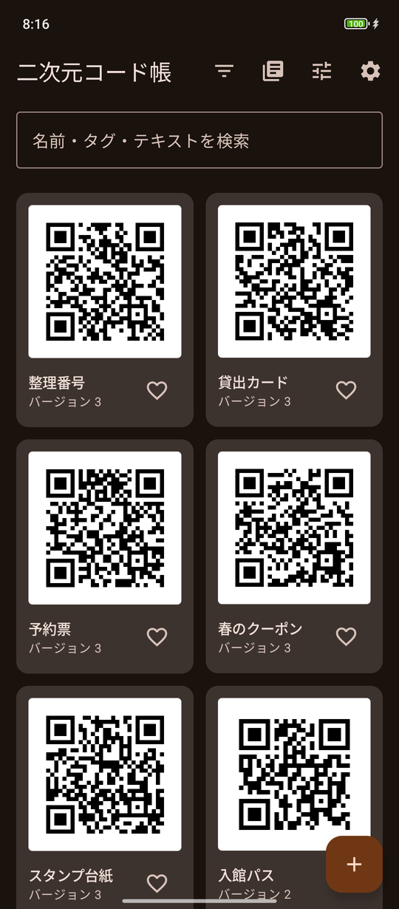
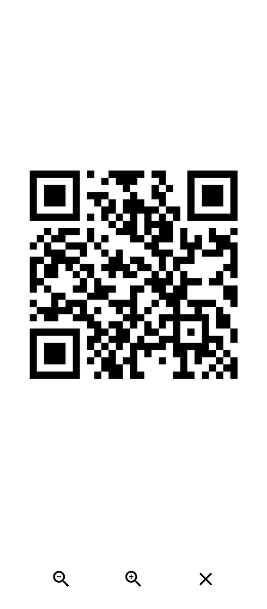
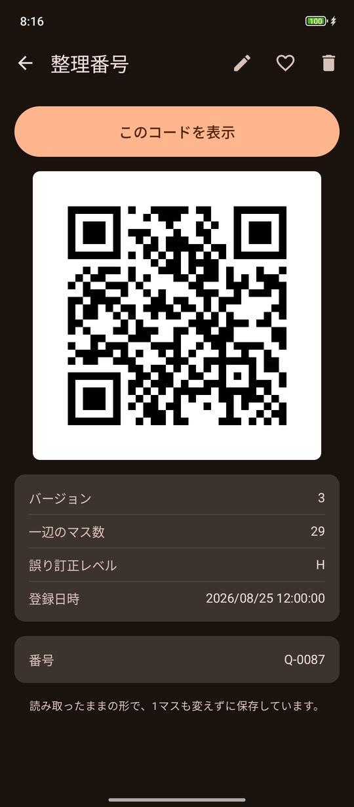
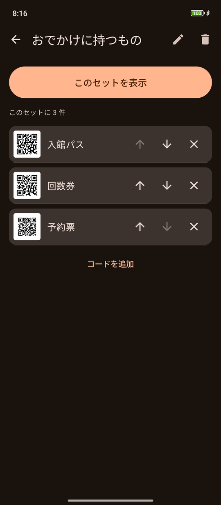

二次元コード帳
紙やカードを1枚ずつ持ち歩くかわりに、端末にまとめて入れておけます。




画面のコードは説明用に作ったもので、実在のサービスとは関係ありません。
元と寸分違わない模様で表示します
このアプリは、読み取った二次元コードの白黒のマス目そのものを保存します。中身を読み取って作り直すのではないので、表示されるのは元とまったく同じ模様です。
同じ内容を表す二次元コードは無数にあり、作り直すとほぼ必ず別の模様になります。読み取り機によっては模様の違いで挙動が変わることがあるため、このアプリは模様をそのまま持ち歩く方法を選んでいます。
登録には同じコードを2回読み取ります
撮影時にマス目を1個でも読み違えると、その誤りごと保存されてしまいます。誤り訂正が効くため読み取り自体は成功してしまい、その場では気づけません。
そこで、角度や距離を変えて2回読み取り、1マスも違わないことを確かめてから登録します。手間はかかりますが、後から直せない誤りを防ぐためのものです。
できること
- 名前とタグを付けて分類できます
- 項目を決めて（テキスト・数値・選択肢）、絞り込みや並び替えに使えます
- よく使う組み合わせを「セット」にまとめ、順に呼び出せます
- 写真を添えて、見た目で見分けられます
- 一覧はつまむと細かく、広げると大きくなります
- 表示中は左右になぞると、前後のコードへそのまま移れます
- 明るい配色と暗い配色を選べます
読み取り機の前で使うための表示
- マス目を整数ピクセルに合わせて描画し、にじみを出しません
- 表示中は画面を最大の明るさにし、消灯を抑えます
- 画面の余白（クワイエットゾーン）を規格どおり確保します
- 表示中は広告を出しません
- 大きさを調整でき、ちょうどよい大きさを既定として覚えられます
写真から自動で入力できます
コードと一緒に持っているものを撮ると、そこに書かれた文字を読み取って、名前・タグ・備考の候補を出します。
判定に使う言葉や見た目はすべて利用者が登録します。アプリはあらかじめ何も持っていません。候補は確認してから反映するので、勝手に書き換わることはありません。文字の読み取りは端末の中だけで行い、画像を外部へ送信しません。
ご利用の前にお読みください
- 二次元コードを作る機能はありません。手元にある印刷済みのコードを読み取って登録するアプリです
- すべての読み取り機で読み取れる保証はありません。読み取り機の方式や画面の反射により、読めない場合があります
- 共有機能はありません。スクリーンショットも撮れません。登録したコードを外部へ持ち出す経路を、意図的に設けていません
- 対応しているのはQRコードのみです。名称は「二次元コード帳」ですが、DataMatrix などには対応していません
データの取り扱い
- 登録した内容は端末内にのみ保存され、外部に送信されることはありません
- 登録した内容はアプリ内でいつでも削除できます。アプリを削除すれば端末内のデータもすべて消えます
- 機種変更に備えて、パスワード付きの暗号化バックアップを書き出せます。このパスワードを忘れると復元できません
- このアプリは広告を表示します（ただし二次元コードを表示している間は表示しません）
詳しくは二次元コード帳のプライバシーポリシーをご覧ください。
権限について
カメラ
二次元コードの読み取りと、アイテムに添える写真の撮影に使います。撮影した画像が端末の外へ送られることはありません。許可しなくても、登録済みの内容の表示とバックアップからの復元は利用できます。
そのほか
インターネット接続などの権限は、広告の配信とカメラ機能のために、アプリが利用しているライブラリが必要とするものです。自前で宣言している権限はカメラだけです。
対応環境
- Android 8.0以降
- 日本語 / English
QRコードは株式会社デンソーウェーブの登録商標です。